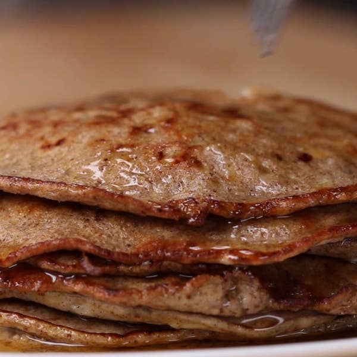

Pancakes

Ingredients
- 1 banana
- 2 eggs
- ¼ teaspoon cinnamon maple syrup, or honey, to serve
Preperation
- In a bowl, mash the banana with a fork.
- Add eggs and cinnamon. Mix until combined.
- Heat a nonstick skillet over medium heat. Add a spoonful of batter and cook for 3-4 minutes, then flip and cook for an additional 3-4 minutes.
- Serve with maple syrup or honey.